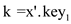
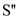

Stack on Secondary Storage
Stack is one of the members of data structure. In stack insertion and deletion are performed at only a single end. Whatever operations are performed they are in LIFO (Last in first out). It means that last element inserted in stack will remove first. Example of a stack is picking up a CD from CD stand. The last put in will be taken out first.
OPERATION ON STACKS: Following three operations can be performed on stack:
1. PUSH
2. POP
3. PEEP
1. PUSH: This is the operation performed for insertion. The push operation inserts a data item into the stack to its top.
2. POP: This is the operation performed for deletion. This pop operation works for removing a data item from the stack to its top.
3. PEEP: This operation is used only for reading the top element of the stack. It will not remove the top element of stack.a. Consider a stack implementation which holds one
page of the stack in memory. The conditions states that stack
operation only performed when enough disk pages present in memory.
If the required disk pages are present in memory, then no disk
accesses will be required. To find the worst case running time to
perform  stack
operation using the above strategy is:
stack
operation using the above strategy is:
Take the following alternating sequence:
PUSH, PUSH, POP, POP,
Assume that first PUSH operation done at the end of page. This
is happening at the page boundary. The second PUSH operation in the
above sequence requires writing the first most word of the next
page. Similarly the second POP operation requires reading in the
previous page once more. Accessing an m words page of disk
requiresCPU time and
one disk access. Hence, operation
will require total  disk
accesses, as stack
operations will be performed.
disk
accesses, as stack
operations will be performed.
Hence, the total CPU time taken will be.
b. If PUSH operations done on the pages which are
not in the memory. Then each PUSH operation required to access page
from disk and then store into memory. Therefore operation
will require total disk
accesses, as push stack
operations will be performed. Accessing an m words page of
disk requiresCPU time and
one disk access. Fully, a disk will be accessed one by one.
Hence, the CPU running time is.
c. A stack consists of mainly two operations, PUSH and POP. The cost of implementation of any operation is calculated by the combination of total CPU time and number of disk access.
In worst case number of disk accesses required for n
stack operation will be. Whatever
operation will perform on the stack, either it will be PUSH or POP.
It will be implemented as a whole. And CPU running time implemented
on this will be .
.
The reason behind is that any disk access to a page m words incurs charges of one disk access and CPU time and here number of disk accesses required for n stack operation will be .
d. In the above parts it is mentioned that only one page of disk can reside in the memory. In order to implement any stack operation, it is necessary to keep the required current page in the memory.
Now, implement a stack by keeping two pages of disk in memory in order to keep the previously used pages in the memory. Now, uses two pages as discussed. Keep marking or tracking the pages to know which of the following two pages are in memory had been least recently used (LRU).
Whenever a new page is store into memory or can say that read a
new page, save the LRU page to the disk if any change is made, and
read it in the new page. While executing any PUSH operation, memory
will be  for a
single page, further it would be while
performing on page
through pushes,
further and
then.
for a
single page, further it would be while
performing on page
through pushes,
further and
then.
The stack pointer of disk will always point to the top of any fresh or new page to be read, taken from the disk. There is data and free space always available in page for performing stack operations in memory. Only two operations PUSH and POP can perform on stack before moving to the next page for reading. So, the stack operations should be performed before every disk access.
When one page resides in the memory then the cost of accessing an m words page of disk requiresCPU time and one disk access. But now two pages of disk reside in the memory. So, that the cost of accessing the disk is reduces to as cost of disk access, which is for every stack operation performed. Because there will be more chance to perform Push or pop operation on currently two pages stored in memory. Here m is the number of words on disk access page.
Now, two pages are store in the memory and each page has m words. So, there will be more probability to insert or get the word in the current pages. It will also reduce the CPU time by m because word is already in memory.
CPU time when one page in memory and each page has m words=
CPU time when two pages in memory and each page has m words is
After ‘ ’ stack
operation have been performed, values of are
collected which could be paid for any required disk access.
’ stack
operation have been performed, values of are
collected which could be paid for any required disk access.
Hence, the amortized CPU time will be  for any
stack operation.
for any
stack operation.
a)
If the leaf node has a height of 1 then look for the depth to recalculate the height of the 2-3-4 tree.
For insertion and deletion operation need to maintain the height of the leaf node. The leaf node running complexity is log(n) for insertion and deletion operations. All the 2-3-4 tree have the same depth.
Therefore, the field is maintained within the procedure of merging.
Hence, the asymptotic running time in any operation (searching, insertion, and deletion) is the same.
b) Implement join operation:
1) When h’ > h’’ then find out the heights of T’ and T’’ with the node N. For the
depth of the tree T is h’- h’’ of the right child path.
2) The insert key k onto the node N.
3) When node N is full, then need to split the tree T with the key k on insertion
operation.
4) Now, set the right most child to contain the key k to node N for the root of T’’.
5) Now 2-3-4 tree depth h’ comes with the resulting of branching constraints. Hence,
h’ < h’’ is similar.
6) When h’= h’’ then join the both root nodes along with the key k otherwise split
the node.
Hence, the procedure is similar to the case 1 since the
procedure has at most  recursions,
each takes time. The
total time for joining is.
recursions,
each takes time. The
total time for joining is.
c)
Suppose the path p has length l, then, where do:
a. if , then and
b. if then and
c. if then and
Tree formed by a root containing and two sub trees and
d. if , then and
Tree formed by a root containing and and
three sub trees,.
Finally consider the node containing k. If  then. If then a tree formed by a root containing and three sub trees. After tress and keys are generated, remove all and. The result is a set of trees and a set of keys . By the properties of 2 – 3 – 4 trees, these are the desired sets for . The height of is greater or equal or the height of. The procedure of break into sets of trees and keys is symmetric.
d)
To split a tree, first find a path from the root to the keys. Then break the set into sets of trees and keys as described above. Next for i from m to 1, do JOIN. The result is a 2 – 3 – 4 tree containing the set. Do the same for and create another tree for. Finally return and to analyze the running time, observe that the time to join two trees of height and is by the (B). Then the total time to join all the trees in is:
since
Since the time for finding the path breaking and is also bounded by . The running time for splitting is.